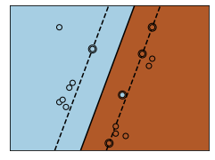
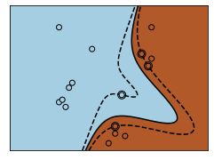
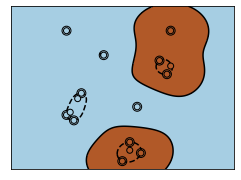

Fraida Fund
Given a set of support vectors \(S\) and associated \(\alpha\) for each,
\[z = w_0 + \sum_{i \in S} \alpha_i y_i \langle \mathbf{x}_i, \mathbf{x}_{t} \rangle \] \[\hat{y} = \text{sign}(z)\]
Measures inner product (a kind of “correlation”) between new sample and each support vector.
Given a set of support vectors \(S\) and associated \(\alpha\) for each,
\[z = w_0 + \sum_{i \in S} \alpha_i y_i \langle \mathbf{\phi}(\mathbf{x}_i), \mathbf{\phi}(\mathbf{x}_{t}) \rangle \] \[\hat{y} = \text{sign}(z)\]
Suppose we are given a dataset of feature-label pairs in \(\mathbb{R}^1\):
\[(-1, -1), (0, -1), (1, -1), (-3, +1), (-2, +1), (3, +1)\]
This data is not linearly separable.
Now suppose we map from \(\mathbb{R}^1\) to \(\mathbb{R}^2\) using \(\mathbf{\phi}(x)=(x,x^2)\):
\[((-1, 1) -1), ((0, 0), -1), ((1, 1), -1), \] \[((-3, 9) +1), ((-2, 4) +1), ((3, 9) +1)\]
This data is linearly separable in \(\mathbb{R}^2\).
Suppose we compute \(\langle \mathbf{\phi}({x}_i), \mathbf{\phi}({x}_{t}) \rangle\) directly:
How many operations (exponentiation, multiplication, division, addition, subtraction) are needed?
What if we express \(\langle \mathbf{\phi}({x}_i), \mathbf{\phi}({x}_{t}) \rangle\) as
\[K(x_i, x_t) = x_i x_t (1+ x_i x_t)\]
How many operations (exponentiation, multiplication, division, addition, subtraction) are needed to compute this equivalent expression?
Suppose kernel \(K(\mathbf{x}_i, \mathbf{x}_t)\) computes inner product in transformed feature space \(\langle \mathbf{\phi}(\mathbf{x}_i), \mathbf{\phi}(\mathbf{x}_{t}) \rangle\)
For the SVM:
\[z = w_0 + \sum_{i \in S} \alpha_i y_i K(\mathbf{x}_i, \mathbf{x}_t) \]



\[K_{\texttt{RBF}}(\mathbf{x}_i, \mathbf{x}_t) = \exp\Big(-\gamma\lVert\mathbf{x}_i-\mathbf{x}_t\rVert^2\Big)\]
First approach: basis function transformation AKA feature mapping
Current approach: kernel - work in transformed space without explicit transformation
Next lesson: wait and see!
Kernels are used in other types of models -
Decision boundary can be computed using an inexpensive kernel function on a small number of support vectors:
\[z = w_0 + \sum_{i \in S} \alpha_i y_i K(\mathbf{x}_i, \mathbf{x}_t)\]
(\(i\in S\) are the subset of training samples that are support vectors)